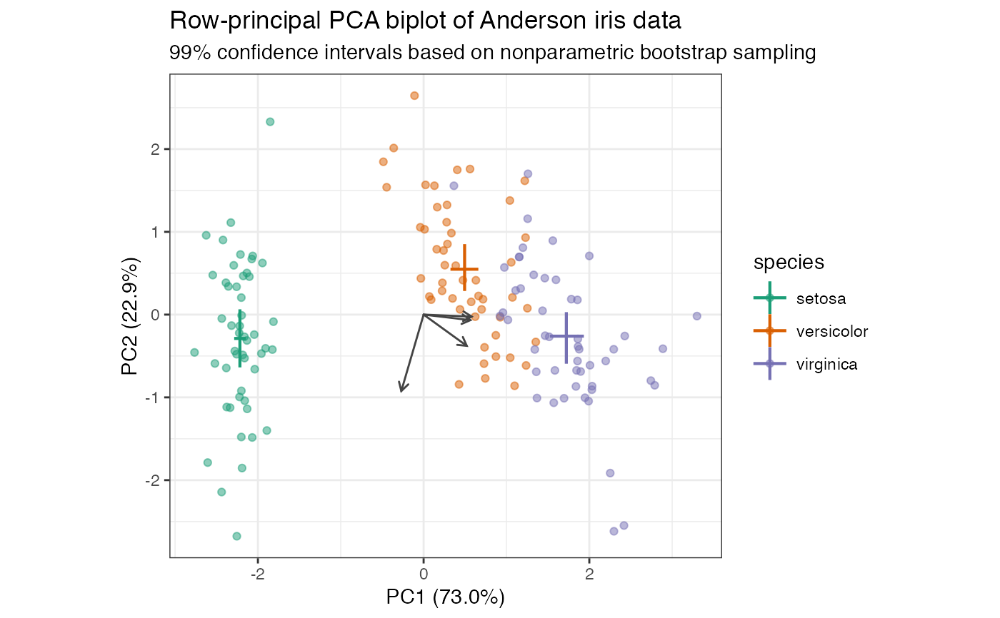

Render intervals depicting ranges, usually about center points
geom-biplot-intervals.Rdgeom_*_lineranges() renders horizontal and vertical intervals
for a specified subject or variable; geom_*_pointranges() additionally
renders a point at their crosshairs.
geom_u_lineranges(mapping = NULL, data = NULL, stat = "center", position = "identity", ..., na.rm = FALSE, show.legend = NA, inherit.aes = TRUE) geom_v_lineranges(mapping = NULL, data = NULL, stat = "center", position = "identity", ..., na.rm = FALSE, show.legend = NA, inherit.aes = TRUE) geom_biplot_lineranges(mapping = NULL, data = NULL, stat = "center", position = "identity", .matrix = "u", ..., na.rm = FALSE, show.legend = NA, inherit.aes = TRUE) geom_u_pointranges(mapping = NULL, data = NULL, stat = "center", position = "identity", ..., na.rm = FALSE, show.legend = NA, inherit.aes = TRUE) geom_v_pointranges(mapping = NULL, data = NULL, stat = "center", position = "identity", ..., na.rm = FALSE, show.legend = NA, inherit.aes = TRUE) geom_biplot_pointranges(mapping = NULL, data = NULL, stat = "center", position = "identity", .matrix = "u", ..., na.rm = FALSE, show.legend = NA, inherit.aes = TRUE)
Arguments
| mapping | Set of aesthetic mappings created by |
|---|---|
| data | The data to be displayed in this layer. There are three options: If A A |
| stat | The statistical transformation to use on the data for this layer, as a string. |
| position | Position adjustment, either as a string, or the result of a call to a position adjustment function. |
| ... | Additional arguments passed to |
| na.rm | Passed to |
| show.legend | logical. Should this layer be included in the legends?
|
| inherit.aes | If |
| .matrix | A character string matching one of several indicators for one
or both matrices in a matrix decomposition used for ordination. The
standard values are |
Format
An object of class GeomLineranges (inherits from GeomLinerange, Geom, ggproto, gg) of length 4.
Biplot layers
ggbiplot() uses ggplot2::fortify() internally to produce a single data
frame with a .matrix column distinguishing the subjects ("u") and
variables ("v"). The stat layers stat_u() and stat_v() simply filter
the data frame to one of these two.
The geom layers geom_u_*() and geom_v_*() call the corresponding stat in
order to render plot elements for the corresponding matrix \(U\) or
\(V\). geom_biplot_*() selects a default matrix based on common practice,
e.g. \(U\) for points and \(V\) for arrows.
Aesthetics
geom_*_lineranges() and geom_*_pointranges() understand the following
aesthetics (required aesthetics are in bold):
xxminxmaxyyminymax`alphacolourlinetypesizegroup
Examples
# Scaled PCA of Anderson iris data with ranges and confidence intervals iris[, -5] %>% prcomp(scale = TRUE) %>% as_tbl_ord() %>% confer_inertia(1) %>% mutate_u(species = iris$Species) %>% print() -> iris_pca#> # A tbl_ord of class 'prcomp': (150 x 4) x (4 x 4)' #> # 4 coordinates: PC1, PC2, ..., PC4 #> # #> # U: [ 150 x 4 | 1 ] #> PC1 PC2 PC3 ... | species #> | <fct> #> 1 -2.26 -0.478 0.127 | 1 setosa #> 2 -2.07 0.672 0.234 ... | 2 setosa #> 3 -2.36 0.341 -0.0441 | 3 setosa #> 4 -2.29 0.595 -0.0910 | 4 setosa #> 5 -2.38 -0.645 -0.0157 | 5 setosa #> # … with 145 more rows #> # #> # V: [ 4 x 4 | 0 ] #> PC1 PC2 PC3 ... | #> | #> 1 0.521 -0.377 0.720 | #> 2 -0.269 -0.923 -0.244 ... | #> 3 0.580 -0.0245 -0.142 | #> 4 0.565 -0.0669 -0.634 |iris_pca %>% ggbiplot(aes(color = species)) + theme_bw() + scale_color_brewer(type = "qual", palette = 2) + geom_u_lineranges(fun.data = mean_sdl, size = .75) + geom_u_point(alpha = .5) + geom_v_vector(color = "#444444") + ggtitle( "Row-principal PCA biplot of Anderson iris data", "Ranges 2 sample standard deviations from centroids" )iris_pca %>% ggbiplot(aes(color = species)) + theme_bw() + scale_color_brewer(type = "qual", palette = 2) + geom_u_lineranges( fun.data = mean_cl_boot, fun.args = list(conf.int = .99), size = .75 ) + geom_u_point(alpha = .5) + geom_v_vector(color = "#444444") + ggtitle( "Row-principal PCA biplot of Anderson iris data", "99% confidence intervals based on nonparametric bootstrap sampling" )